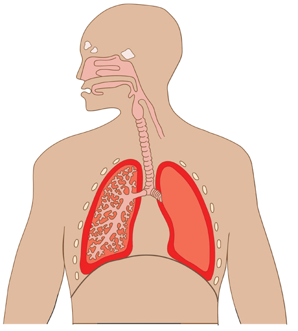

136
Student’s Book - Form Two
Biology for Secondary Schools
Health status
Generally, the rate of gas exchange increases when a person is sick. This is due to increased metabolism by the liver during the removal of the toxins released by disease-causing micro-organisms or break down of the drugs taken. Certain diseases such as asthma make the body weak and slow down the breathing process. Asthma is an inflammation in the respiratory airways which affects gas exchange. The inflammation happens due to allergic reactions caused by allergens such as pollen, smoke, and strong smell in the air. Asthma makes breathing difficult because
the
respiratory
airways
become very narrow when they are inflamed. This reduces the rate of gas exchange.
Altitude
Altitude is the height above sea level. The
concentration of oxygen is lower at high
altitudes, than at low altitudes. This is
due to reduced pressure at high altitudes
compared to low altitudes. Breathing
rate is also higher at high altitudes than
at low altitudes due to the decreased
atmospheric pressure, resulting in
breathing difficulty. Therefore, the rate
of gas exchange has to increase in order
to obtain enough oxygen.
Age
Young people are generally more active than old people. In addition, many growth processes take place in the bodies of young people compared
to adults. This condition increases the demand for oxygen so as the rate of gas exchange.
Exercise 6.1
1.
Describe the functions of each
of the labeled parts in relation to gas exchange in mammals.

(e)
(d)
(c)
(b)
(a)
2.
Explain why
(a)
the rate of breathing
increases during physical
exercise; and
(b)
your breathing rate does not go back to normal as soon as you stop exercising.
3.
Answer the following questions
briefly.
(a)
Why is it better to breathe
through the nose than
through the mouth?
(b)
What would happen if the
epiglottis was removed from
the human body?
(c)
Explain how breathing takes
place in human beings.
08/04/2026 10:18:36